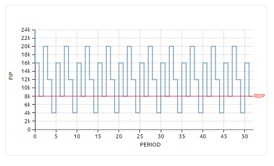

Introducción¶
Un modelo es una representación simplificada de un sistema. Una simulación generalmente se refiere a una versión computarizada de un modelo, en el cual se analizan las interacciones de las partes del sistema a través del tiempo.
En la simulación de nuestro sistema de inventario se estudia como los siguientes componentes afectan al nivel de inventario:
- demanda
- politica de abastecimiento
- tiempo de entrega
Descripción general del modelo¶
Para nuestro modelo, se supone un almacén con un solo producto.
Periodo a periodo se disminuye el nivel de inventario de acuerdo a la demanda. Si el tamaño del inventario al momento de la solicitud es mayor o igual a la demanda, se satisface inmediatamente. Si la demanda excede el nivel de inventario, la parte que no puede ser entregada será asumida como una venta perdida.
De acuerdo a la politica de abastecimiento definida, se revisa el nivel de inventario y se realizan los pedidos para evitar quedarse sin stock. El pedido llegará al almacén de acuerdo al tiempo de entrega.
Gráfica del comportamiento nivel de inventario en el tiempo¶
Note
Los pedidos se realizan en función de la posición de inventario y no del nivel de inventario. Esto porque la posición de inventario captura el inventario a la mano y el que está por llegar, de esta forma se evita la tendencia de subestimar o exceder la cantidad pedida.
Componentes del modelo¶
Demanda y Tiempo de entrega¶
La demanda y el tiempo de entrega del producto son aleatorios, y son modelados mediante una distribución de probabilidad que se define al momento de crear el producto. Hasta el momento existen tres formas para modelarla: constante, normal y triangular.
Dentro de la aplicación existe un generador de números aleatorios los cuales son utilizados para simular sus valores. Si por ejemplo se define que la demanda sigue una distribución normal con media 20.000 y desviación estandar 8000, sera mucho más probable encontrar valores entre 12.000 y 28.000
Politicas de inventario¶
Por el momento se dispone de dos politicas de abastecimiento:
Politica Qs¶
Si es posible conocer el nivel de inventario en tiempo real, se sugiere la política de reabastecimiento (Q,s). Si el nivel almacenado es inferior o igual a un punto de reorden “s”, se piden “Q” unidades.
Politica RS¶
Si solo se pueden hacer verificaciones del inventario cada cierto periodo de tiempo, esta disponible la política (R,S). Cada “R” periodos se revisa el nivel de inventario, si el nivel almacenado es superior a “S” no se realiza petición, si no es así se pedirá hasta llegar a “S”.
Glosario¶
- Demanda: mercancía que los consumidores piden y estan dispuestos a comprar
- Distribución de probabilidad: es una tabla o ecuación que asocia cada resultado de un experimento estadistico con su probabilidad de ocurrencia.
- Tiempo de entrega: tiempo que transcurre entre el momento que se realiza la orden y el instante en que se recibe
- Nivel de inventario: la cantidad almacenada actual de un producto
- Posición del inventario: es el nivel del inventario más los pedidos pendientes por llegar
- Política de abastecimiento: son el conjunto de reglas que definen cuando se debe realizar un pedido para reabastecer el inventario